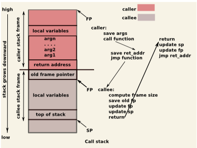
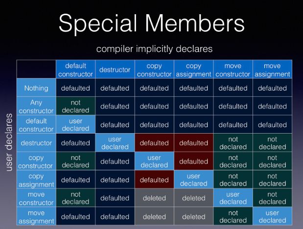

Parameter transfer is more efficient in 64-bit mode than in 32-bit mode, and more efficient in 64-bit Linux than in 64-bit Windows. In 64-bit Linux, the first six integer parameters and the first eight floating-point parameters are transferred in registers.
If the last statement of a function is a call to another function, then the compiler can replace the call by a jump to the second function. The second function will not return to the first function, but directly to the place where the first function was called from. The tail call optimization works only if the two functions have the same return type. It works even if there is a return value Here, the return from function1 is eliminated by jumping directly to function2. int function2(int x); int function1(int y) { … return function2(y+1); }
A detailed and good reference: https://zhu45.org/posts/2017/Jul/30/understanding-how-function-call-works/
A good reference: https://blog.csdn.net/CJF_iceKing/article/details/112104348

esp (shown as SP in the graph), the top of the stack (bottom in the graph).
ebp (base pointer, shown as FP in the graph) is usually set to esp at the start of the function.
All x86 calling conventions define ebp as being preserved across function calls. ebp itself actually points to the previous frame's base pointer, which enables stack walking in a debugger and viewing other frames local variables to work.
mov eax,dword ptr [ebp-4] //argl2存储在当前栈ebp-4的位置
push eax // 并且压栈
mov ecx,dword ptr [ebp-8] // iVal1存储在当前栈ebp-8的位置
push ecx // 并且压栈
call StackResearch!FunAdd (000f1000) //调用call指令调用函数FunAdd
The call instruction does two things:
function look something like:
push ebp ; Preserve current frame pointer
mov ebp, esp ; Create new frame pointer pointing to current stack top
sub esp, 20 ; allocate 20 bytes worth of locals on stack.
Then later in the function you may have code like (presuming both local variables are 4 bytes)
mov [ebp-4], eax ; Store eax in first local
mov ebx, [ebp - 8] ; Load ebx from second local
When function call starts:
When a function is done executing:
From C/C++ programming perspective, the program entry point is main() function. From the perspective of program execution, however, it is not. Prior to the point when the execution flow reaches to the main(), calls to few other functions are made, which setup arguments, prepare environment variables for program execution etc.
The executable file created after compiling a C source code is a Executable and Linkable Format (ELF) file.
execve() linux system call
_start() function.objdump -f example
start address 0x00000000004003e0
_start() function prepares the input arguments for another function _libc_start_main() which will be called next._libc_start_main() function is following:
_init() function which performs initialization before the main() function start._fini() and _rtld_fini() functions to perform cleanup after program terminates_libc_start_main() calls the main() function.https://www.youtube.com/watch?v=vLinb2fgkHk
Six special member functions
X()
~X()
X(const X&)
X& operator=(const X&)
X(X&&)
X& operator=(X&&)
Special member functions can be one of three types:
=default, compiler implicitly generates, it is still user-declared)=deleted)In the below example, default constructed is not declared
X can still be default constructed by using the variadic constructor (with 0 parameter)struct X {
template<class ...Args>
X (Args&& ...args);
};
In the below example, the default constructor is deleted, but deleted members still participate in the overload resolution.
struct X {
template<class ...Args>
X (Args&& ...args);
x() = deleted
};

Rule of three
If a class requires a user-defined destructor, a user-defined copy constructor, or a user-defined copy assignment operator, it almost certainly requires all three.
Rule of five
C++ Core Guidelines: C.21: If you define or =delete any copy, move, or destructor function, define or =delete them all
Because the presence of a user-defined destructor, copy-constructor, or copy-assignment operator prevents implicit definition of the move constructor and the move assignment operator, any class for which move semantics are desirable, has to declare all five special member functions:
=default or =delete (eg, a destructor with ==default), will suppress the implicit declaration of a move constructor and move assignment operator.=default or =delete, will cause an implicitly generated copy constructor or implicitly generated copy assignment operator to be defined as =deleted.So as soon as any of the special functions is declared, the others should all be declared to avoid unwanted effects like turning all potential moves into more expensive copies, or making a class move-only.
Rule of zero
C++ Core Guidelines: C.20: If you can avoid defining default operations, do
Classes that have custom destructors, copy/move constructors or copy/move assignment operators should deal exclusively with ownership (which follows from the Single Responsibility Principle). Other classes should not have custom destructors, copy/move constructors or copy/move assignment operators.
When a base class is intended for polymorphic use, its destructor may have to be declared public and virtual. This blocks implicit moves (and deprecates implicit copies), and so the special member functions have to be declared as defaulted
constexpr constructor and destructor
[... missing content ...]
Destructor are noexcept by default
C++ Core Guidelines: C.37: Make destructors noexcept
Destructor (including implicitly declared) is by default noexcept(true). A throwing destructor must be explicitly declared noexcept(false).
If a destructor throws, during stack unwinding (during another throw), std::terminate is called.
C++20 constrained destructors
In C++20, a class can have more than one destructor, one of them matching the constrained requirement.
template<typename T>
struct Optional {
Optional() = default;
Optional(T value) : value{ value }, hasValue{ true } {}
~Optional() requires(!std::is_trivially_destructible_v<T>) {
if (hasValue)
value.~T();
}
~Optional() = default; // trivial dtor
private:
union {
T value;
};
bool hasValue = false;
};
The copy-and-swap idiom elegantly assists the assignment operator in achieving two things: avoiding code duplication, and providing a strong exception guarantee.
Conceptually, it works by using the copy-constructor's functionality to create a local copy of the data, then takes the copied data with a swap function, swapping the old data with the new data. The temporary copy then destructs, taking the old data with it. We are left with a copy of the new data.
In order to use the copy-and-swap idiom, we need three things:
swap functionAdvantage of copy-and-swap idiom:
In its refined form, copy-and-swap is implemented by having the copy performed by initializing the (non-reference) parameter of the assignment operator:
T& operator=(T tmp)
{
this->swap(tmp);
return *this;
}
One way to implmenet swap() functionality of user-defined type is as a friend member function taking two parameters. Other way can be a swap() member function taking one parameter.
class dumb_array {
public:
// When ADL was introduced, the friend member function could then only be found via ADL;
friend void swap(dumb_array& first, dumb_array& second) // nothrow
{
// enable ADL (not necessary in our case, but good practice)
using std::swap;
swap(first.mSize, second.mSize);
swap(first.mArray, second.mArray);
}
dumb_array& operator=(dumb_array other)
{
swap(*this, other);
return *this;
}
};
// You can use it like below
// that is, if swap(x, y) finds a better match, via ADL, it
// will use that instead; otherwise it falls back to std::swap
using std::swap; // allow use of std::swap...
swap(x, y); // ...but select overloads, first
Always provide all out of a set of related operations: Operators are related to each other and to other operations. Eg
a + b, users will expect to be able to call a += b, too.++a, they will expect a++ to work as well.a < b, they will most certainly expect to also to be able to check whether a > b.Binary arithmetic operators
The compound assignment operators can be used as a base for their non-compound counterparts. That is, operator + is implemented in terms of +=, - is implemented in terms of -= etc.
+ and its companions should be non-members, while their compound assignment counterparts (+= etc.), changing their left argument, should be a member.
class X {
X& operator+=(const X& rhs) // returns its result by reference
{
// actual addition of rhs to *this
return *this;
}
};
// note that operator+ takes its left operand by copy rather than by const reference.
// The reason for this is the same as the reason giving for operator= taking its argument per copy.
inline X operator+(X lhs, const X& rhs) // returns its result per value
{
lhs += rhs;
return lhs;
}
switch statement (T2 is integral type);if statement or a loop (T2 is bool).Implicit conversion sequence consists of the following, in this order:
operator bool()In C++03, you need to use the safe bool idiom to avoid evil things:
class X {
operator bool() const { return is_valid; }
};
int x = my_object; // this works, evil!
In C++11 you can use an explicit conversion which now remove the need for the Safe Bool idiom.
class X {
explicit operator bool() const { return is_valid; }
};
int x = my_object; // does not compile because there's no explicit conversion
bool y = bool(my_object); // an explicit conversion does the trick
if (my_object) { ... } // still works, this uses the explicit conversion "implicitly", ie. "contextually conversion".
Even with explicit concersion defined, The compiler is allowed to implicitly convert to bool in some cases. An expression e appearing in such a context is said to be contextually converted to bool and is well-formed if and only if the declaration bool t(e); is well-formed, for some invented temporary variable t (§8.5).
The places were this contextual conversion to bool happens are:
if, while, and for statements;!, logical conjunction &&, and logical disjunction ||;?:;static_assert;noexcept exception specifier;The code for accessing a data member is more compact if the offset of the member relative to the beginning of the structure or class is less than 128 because the offset can be expressed as an 8-bit signed number.
Each time a new object of a class is declared or created it will generate a new instance of the data members. But each member function has only one instance. The function code is not copied because the same code can be applied to all instances of the class.
Calling a member function is as fast as calling a simple function with a pointer or reference to a structure. A static member function is faster than a non-static member function because it does not need the 'this' pointer.
The three functions Sum1, Sum2 and Sum3 are doing exactly the same thing and they are equally efficient. identical assembly code generated by compilers.
Class S3 {
public:
int a; int b;
int Sum1() {return a + b;}
};
int Sum2(S3 * p) {return p->a + p->b;}
int Sum3(S3 & r) {return r.a + r.b;}